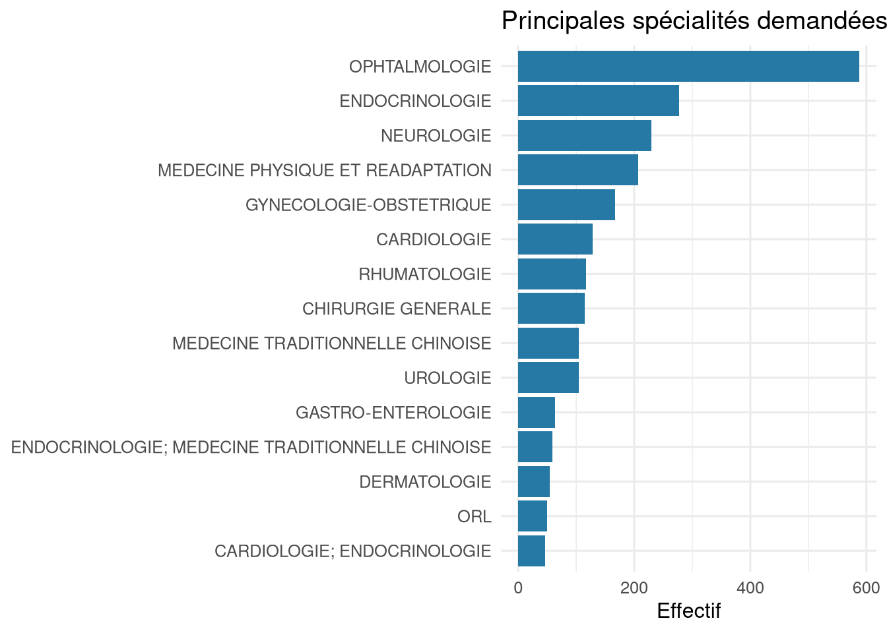
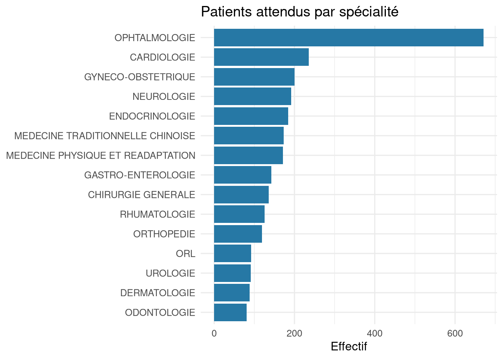
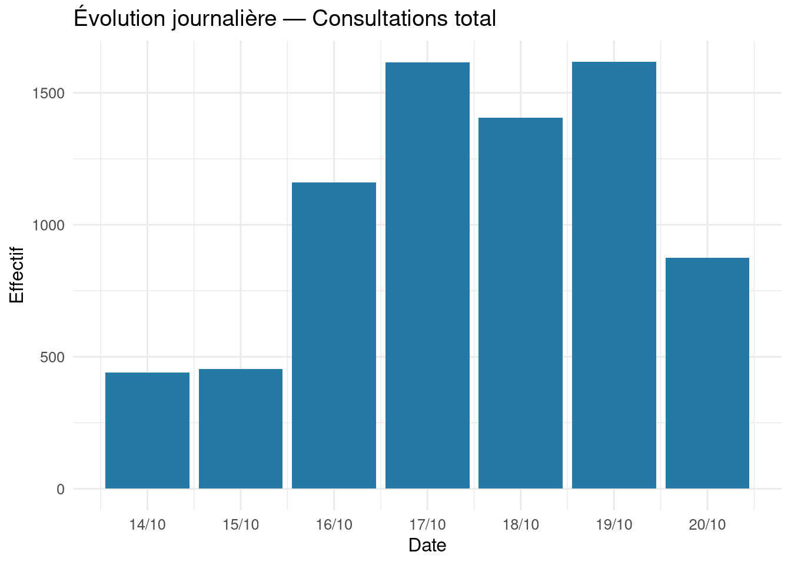
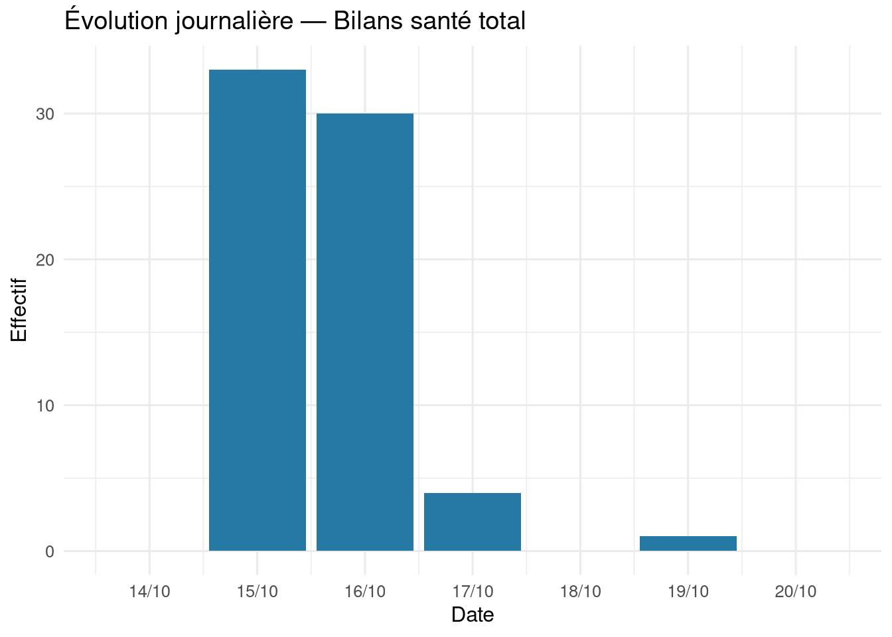
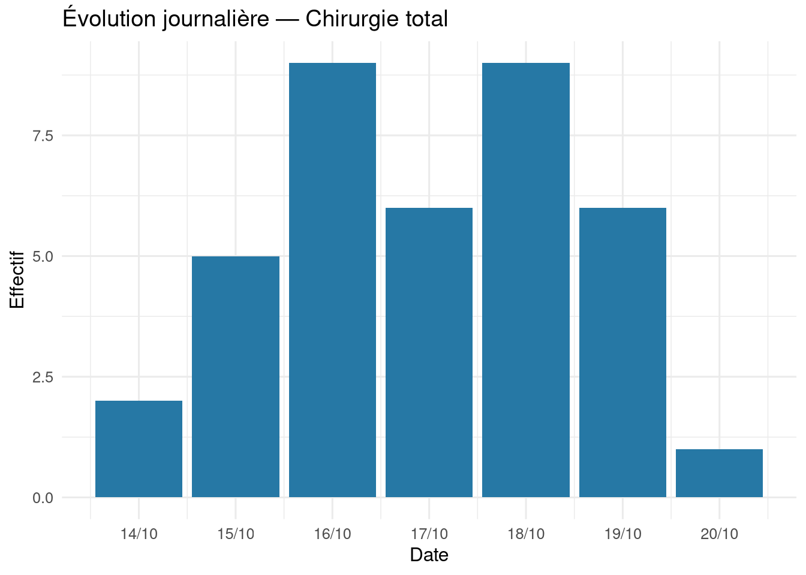
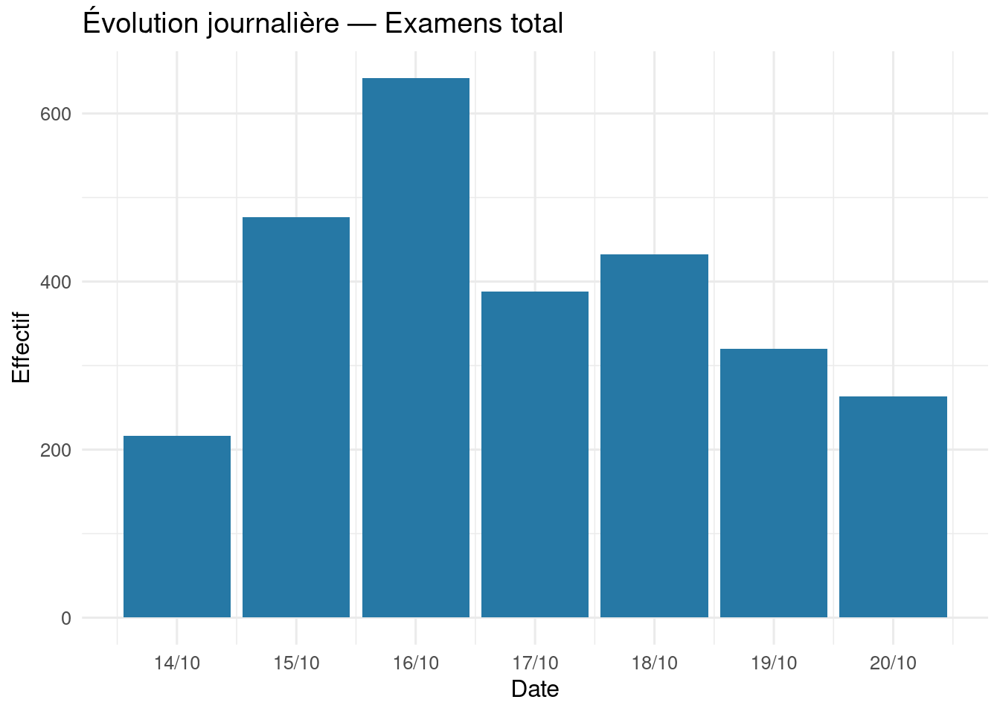
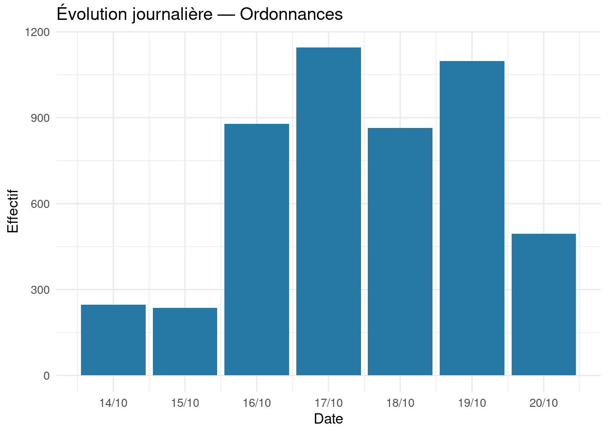
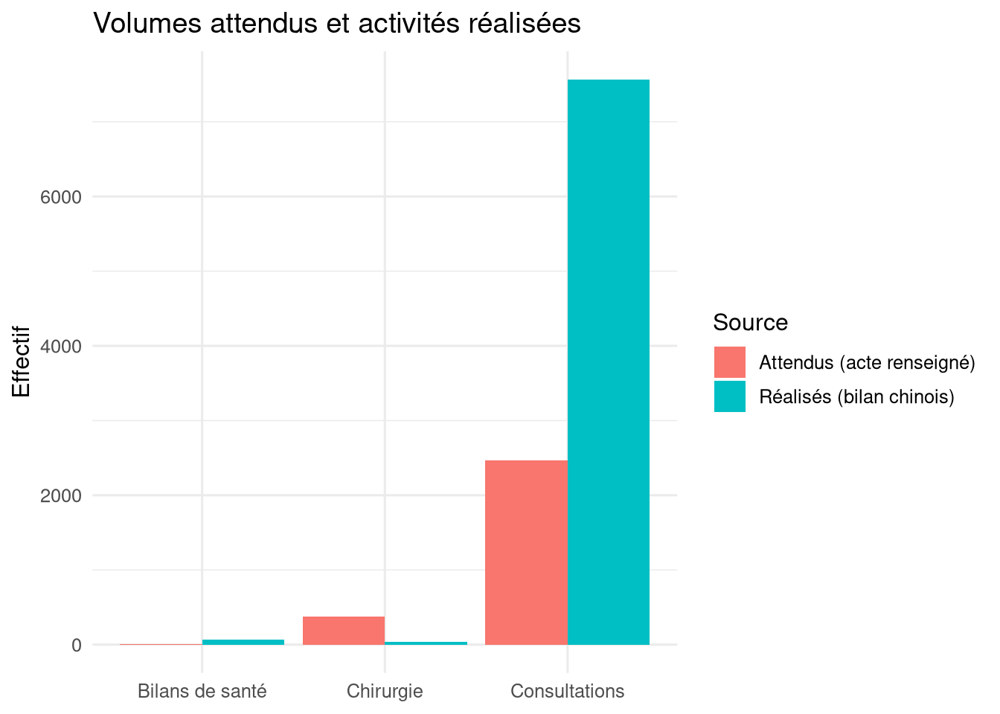

| Indicateur | Valeur |
|---|---|
| Patients recensés (lignes) | 4140 |
| Patients recensés (ID distincts) | 4128 |
| Patients inscrits au planning (lignes) | 2774 |
| Patients attendus uniques, planning + additifs | 2929 |
| Patients ajoutés exclusivement par additifs | 155 |
| Consultations réalisées — bilan chinois | 7566 |
| Bilans de santé réalisés — bilan chinois | 68 |
| Interventions chirurgicales — bilan chinois | 38 |
MISSION HARMONIE 2026 — RAPPORT BILAN GLOBAL
Recensement, patients attendus, bilan chinois et comparaison
Synthèse générale
Partie I — Patients recensés
Le recensement est décrit indépendamment de la programmation. Un enregistrement peut contenir plusieurs spécialités demandées.
| modalite | Effectif | Pourcentage (%) |
|---|---|---|
| F | 2111 | 51 |
| M | 2029 | 51 |
| modalite | Effectif | Pourcentage (%) |
|---|---|---|
| CIVIL | 3230 | 78 |
| MILITAIRE | 205 | 78 |
| RETRAIT | 187 | 78 |
| AYANT_DROIT | 185 | 78 |
| GENDARME | 169 | 78 |
| POLICE | 91 | 78 |
| AFFAIRES_MARITIMES | 27 | 78 |
| DOUANE | 14 | 78 |
| PERSONNEL_CIVIL_DE_LA_D_FENSE | 13 | 78 |
| EAUX_ET_FORETS | 10 | 78 |
| AUTRES_PARAMILITAIRES | 9 | 78 |
| modalite | Effectif | Pourcentage (%) |
|---|---|---|
| Non renseigné | 4140 | 100 |

Partie II — Patients retenus et attendus
L’effectif attendu est l’union dédoublonnée des personnes figurant au planning général et des listes additives, y compris les listes VIP et celles de l’ambassade. Le nombre de personnes est distinct du nombre d’actes programmés.
| provenance | Patients |
|---|---|
| Additif uniquement | 155 |
| Planning initial | 2774 |
| modalite | Effectif | Pourcentage (%) |
|---|---|---|
| CONSULTATION | 2457 | 83.9 |
| CHIRURGIE | 372 | 83.9 |
| Non renseigné | 90 | 83.9 |
| CONSULTATION / BILAN DE SANTE | 4 | 83.9 |
| GYNECOLOGIE ET OPHTALMOOGIE | 2 | 83.9 |
| CONSULTATION; CHIRURGIE OU ACTE | 1 | 83.9 |
| MEDECINE CHINOISE | 1 | 83.9 |
| MEDECINE TRADITIONNELLE | 1 | 83.9 |
| UROLOGIE ET CARDIOLOGIE | 1 | 83.9 |
| modalite | Effectif | Pourcentage (%) |
|---|---|---|
| OPHTALMOLOGIE | 671 | 22.9 |
| CARDIOLOGIE | 236 | 22.9 |
| GYNECO-OBSTETRIQUE | 200 | 22.9 |
| NEUROLOGIE | 192 | 22.9 |
| ENDOCRINOLOGIE | 184 | 22.9 |
| MEDECINE TRADITIONNELLE CHINOISE | 173 | 22.9 |
| MEDECINE PHYSIQUE ET READAPTATION | 171 | 22.9 |
| GASTRO-ENTEROLOGIE | 142 | 22.9 |
| CHIRURGIE GENERALE | 136 | 22.9 |
| RHUMATOLOGIE | 126 | 22.9 |
| ORTHOPEDIE | 119 | 22.9 |
| ORL | 92 | 22.9 |
| UROLOGIE | 91 | 22.9 |
| DERMATOLOGIE | 88 | 22.9 |
| ODONTOLOGIE | 81 | 22.9 |
| NEPHROLOGIE | 44 | 22.9 |
| PNEUMOLOGIE | 34 | 22.9 |
| PEDIATRIE | 30 | 22.9 |
| Non renseigné | 18 | 22.9 |
| GYNECOLOGIE-OBSTETRIQUE | 17 | 22.9 |
| HEMATOLOGIE | 8 | 22.9 |
| TRAUMATOLOGIE | 7 | 22.9 |
| BILAN DE SANTE | 5 | 22.9 |
| CHIRURGIE DES BRULES | 5 | 22.9 |
| MEDECINE CHINOISE | 4 | 22.9 |
| CHIRURGIE | 3 | 22.9 |
| CONSULTATION ET BILAN DE SANTE | 3 | 22.9 |
| GYNECOLOGIE | 3 | 22.9 |
| OPHTAMOLOGIE | 3 | 22.9 |
| CHIRURGIE DENTAIRE | 2 | 22.9 |
| MTC | 2 | 22.9 |
| OPHTALMOLOGIE/ MTC | 2 | 22.9 |
| OTO-RHINO-LARYNGOLOGIE | 2 | 22.9 |
| CONSULTATION DE RHUMATOLOGIE | 1 | 22.9 |
| CONSULTATION ET INTERVENTION CHIRURGICALE | 1 | 22.9 |
| CONSULTATION; BILAN DE SANTE | 1 | 22.9 |
| DEBUT D’HERNIE | 1 | 22.9 |
| DERMATOLOGIE/ OPHTALMOLOGIE | 1 | 22.9 |
| DIABETOLOGIE & UROLOGIE | 1 | 22.9 |
| GASTRO ENTEROLOGIE | 1 | 22.9 |
| GASTRO-ANTEROLOGIE | 1 | 22.9 |
| GENERALISTE | 1 | 22.9 |
| MEDECINE GENERALE | 1 | 22.9 |
| MEDECINE GENERALE ; MEDECINE TRADITIONNELLE CHINOISE | 1 | 22.9 |
| MEDICINE CHINOISE | 1 | 22.9 |
| MTC/ GASTRO ENTEROLOGIE/ OPHTALMOLOGIE | 1 | 22.9 |
| MTC/ NEUROLOGIE/ GASTRO-ENTEROLOGIE/ GYNECO-OBSTETRIE/ OPHTALMOLOGIE | 1 | 22.9 |
| NEUROLOGIE & CHIRURGIE DENTAIRE | 1 | 22.9 |
| OPHTALMOLOGIE & CHIRURGIE DENTAIRE | 1 | 22.9 |
| OPHTALMOLOGIE CARDIOLOGIE | 1 | 22.9 |
| OPHTALMOLOGIE ET ENDOCRINOLOGIE | 1 | 22.9 |
| OPHTALMOLOGIE/ CHIRURGIE DENTAIRE | 1 | 22.9 |
| OPHTALMOLOGIE/ GASTRO ENTEROLOGIE/ MTC | 1 | 22.9 |
| OPHTALMOLOGIE/ GYNECOLOGIE/ MTC | 1 | 22.9 |
| OPHTALMOLOGIE/ NEUROLOGIE/ MTC | 1 | 22.9 |
| OPHTALOMOLGIE/ GENERALISTE | 1 | 22.9 |
| OPHTHALMOLOGIE | 1 | 22.9 |
| ORL ; MEDECINE TRADITIONNELLE CHINOISE | 1 | 22.9 |
| ORL ; OPHTALMOLOGIE | 1 | 22.9 |
| PROBLEME A LA HANCHE | 1 | 22.9 |
| PROBLEME LOMBAIRE | 1 | 22.9 |
| RHUMATOLOGIE/ UROLOGIE/ BILAN DE SANTE/ MTC | 1 | 22.9 |
| TRAUMATOLOGIE/ GASTRO ENTEROLOGIE/ ORL | 1 | 22.9 |
| UROLOGIE/ BILAN DE SANTE/ MTC | 1 | 22.9 |
| UROLOGIE/ NEUROLOGIE | 1 | 22.9 |
| UROLOGIE/TRAUMATOLOGIE | 1 | 22.9 |
| CHIRURGIE DENTAIRE | 1 | 22.9 |
| CHIRURGIE DENTAIRE / DERMATOLOGIE | 1 | 22.9 |

| date_rdv | Lignes programmées |
|---|---|
| 2026-10-19 | 526 |
| 2026-10-16 | 519 |
| 2026-10-15 | 518 |
| 2026-10-17 | 515 |
| 2026-10-18 | 511 |
| 2026-10-20 | 185 |
Partie III — Bilan chinois
Les indicateurs ci-dessous sont des volumes d’activités déclarés, et non nécessairement des nombres de patients uniques.
| Indicateur | Total |
|---|---|
| Consultations total | 7566 |
| Bilans santé total | 68 |
| VIP chinois | 22 |
| VIP ivoiriens | 46 |
| Hospitalisations entrées | 23 |
| Hospitalisations sorties | 23 |
| Patients hospitalisés | 17 |
| Chirurgie total | 38 |
| Chirurgie ambulatoire | 16 |
| Chirurgie avec hospitalisation | 22 |
| Consultations à bord | 6958 |
| Examens total | 2738 |
| CT | 566 |
| DR | 207 |
| Échographie | 709 |
| ECG | 252 |
| Analyses laboratoire | 990 |
| Anatomopathologie | 14 |
| Endoscopie digestive | 10 |
| Équipe médicale (actes) | 540 |
| Ordonnances | 4964 |
| Médicaments délivrés (boîtes) | 22087 |





Comparaison — Patients attendus et bilan chinois
Précaution méthodologique : le fichier du bilan chinois contient des agrégats journaliers et une liste partielle d’interventions, mais pas une liste nominative exhaustive des personnes effectivement reçues. Les taux suivants sont donc des rapports entre volumes d’activité et effectifs programmés, et non des taux de présence individuels vérifiés.
| Activite | Attendus (acte renseigné) | Réalisés (bilan chinois) | Écart de volumes | Rapport réalisés / attendus (%) |
|---|---|---|---|---|
| Consultations | 2462 | 7566 | 5104 | 307.3 |
| Bilans de santé | 4 | 68 | 64 | 1700.0 |
| Chirurgie | 373 | 38 | -335 | 10.2 |

Qualité des données et limites
| Contrôle | Valeur |
|---|---|
| Doublons d’ID dans le recensement | 12 |
| Lignes du planning | 2774 |
| Patients uniques du planning (ID ou nom) | 2774 |
| Lignes additives cumulées avant dédoublonnage | 248 |
| Patients attendus après rapprochement | 2929 |
| Patients attendus sans ID | 103 |
| Additifs sans ID | 172 |
| Dates du bilan journalier | 7 |
Les listes additives peuvent reprendre des patients déjà programmés, et les variations d’orthographe peuvent empêcher certains rapprochements. Le rapprochement nominatif automatique n’est effectué que lorsqu’un nom correspond à un seul ID identifié. Les homonymes, les noms abrégés, les actes multiples et les dossiers sans identifiant doivent être vérifiés avant toute publication de chiffres définitifs. La comparaison avec le bilan chinois ne permet pas d’établir qui s’est effectivement présenté, ni de mesurer une couverture par spécialité sans données d’activité réalisées de granularité comparable.